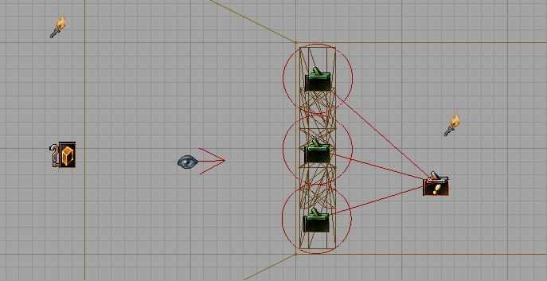

Deadly Fan
Introduction
This is a tutorial on how to create a rotating fan which actually sucks you in and kills you. It's actually very simple 
For the Deadly Fan you'll need to add several new actors to your level. I'm assuming you know the basics of all of these actors – you may want to browse the class spec pages before you start.
- Fan2: This is the fan
- SpecialEvent: This will actually kill the player.
- Trigger: This will make sure the player will get killed.
- ZoneInfo: This is going to make sure that the player gets sucked into the fan.
Let's get to work

This is what it will look like |
Fan2
Just add this Fan2 decoration where you want the fan to be in your level. You can adjust its scale in its properties Display → Drawscale.
SpecialEvent
I added one SpecialEvent to my level. The position of this actor doesn't matter.
Make sure its properties are similar to these.
- SpecialEvent1
- Events:
- Tag: TheFanHitsYou
- Object:
- InitialState: DamageInstigator (or KillInstigator)
- SpecialEvent:
- Damage: 100000 (not necessary when you use InitialState KillInstigator)
- Events:
If you're using KillInstigator, you can set the SpecialEvent to display a custom death message when it kills a player:
- SpecialEvent → DamageType = SpecialDamage
- SpecialEvent → DamageString = %o was hacked. %k (for example. "%o" will be replaced with the player's name, "%k" will be removed, but it won't work without it.)
Trigger
You'll need to add several Triggers with a small radius but with a large height. Just make sure the Triggers cover the entire Fan and using several Triggers with smaller radii makes sure you don't get killed abnormally early (as in: before you hit the fan ). Look at the two pics on this page to see what I mean.
![[deadlyfan2]](images/deadlyfan2.jpeg) The Triggers' Height should be rather large, compared to the Radius. |
Also make sure all Triggers have this:
- Events:
- Event: TheFanHitsYou
ZoneInfo
This is the tricky part. You need to zone off a certain area in your level in which the Fan will suck you in. Once you got your zone, add a ZoneInfo in it.
The last thing you need to do is change the ZoneVelocity. So, open the ZoneInfo's properties and go to ZoneInfo → ZoneVelocity.
In my testlevel I had these settings:
- X: 250.000000
- Y: 0.000000
- Z: 0.000000
But this will probably need to be changed to suit the situation in your own level.
Conclusion
You're basically done  Boot your level and let yourself slide .
Boot your level and let yourself slide .
Notes
Instead of the Trigger-SpecialEvent combination, you can also use TriggeredDeath. Then you just need to add several TriggeredDeath-actors on the positions the Triggers are now in. You'll also need to remove those usual Triggers and the SpecialEvent.
Comments
Place your comments on this tutorial here .
The Twiggman: Lol back in the day I did the same idea but I used a rotating mover and A thin undetectable solid that you would get pushed into and expload on. Good old encroach damage. Might wanna do some zoning also to create some gravity suction. Sweet though.
Related Topics
- Dynamics topic page